Tinnitus
Tinnitus is the perception of sound in the ears or head without an external source. It can manifest as ringing, buzzing, hissing, clicking, or other noises. Tinnitus can be temporary or chronic, mild or severe, and may affect one or both ears. While it is often associated with hearing loss, it can also occur in individuals with normal hearing and is very common in patients with hyperacusis. The exact cause of tinnitus varies and can include exposure to loud sounds, ear infections, certain medications, or neurological factors.
Every member of the Hyperacusis Guide team experiences some degree of tinnitus ranging from mild to severely debilitating. When tinnitus occurs alongside hyperacusis, it is often reactive tinnitus, meaning it intensifies immediately in response to sounds that exceed one’s tolerance threshold.
Key Features
- Perception of sound without an external source (ringing, buzzing, hissing, or clicking).
- Can affect one ear (unilateral) or both ears (bilateral).
- May be continuous, intermittent, or pulsatile (rhythmic with heartbeat).
- Severity ranges from mild awareness to significant disruption of daily life and sleep.
- Often associated with hearing loss, noise exposure, acoustic trauma, or ear injury.
- May be accompanied by ear fullness, discomfort, or hyperacusis (sound sensitivity).
- Triggers can include stress, fatigue, medications, or exposure to loud sound.
- Diagnosis is primarily clinical, often involving audiological testing and medical evaluation.
- Management may include sound therapy, counseling, stress reduction, or medical interventions.
Many individuals with hyperacusis also report experiencing atypical auditory phenomena such as musical tinnitus and palinacousis. Musical tinnitus involves the perception of music or melodies without an external source. Palinacousis is a phenomenon in which a sound persists or replays after the external stimulus has ceased. For instance, an individual might hear the sound of a door closing and continue to perceive a faint repetition of it moments later. Similarly, one might hear the blare of an ambulance siren and continue to perceive the sound internally even after the ambulance has passed and the environment is silent.
Susan Shore Device
The Susan Shore device, developed at the University of Michigan, is an experimental treatment for tinnitus that uses a technique known as bimodal neuromodulation. This approach combines precisely timed sounds with mild electrical stimulation of the face or neck to retrain the brain’s auditory pathways and reduce tinnitus perception. The device is currently undergoing clinical testing and has shown promising results in reducing tinnitus loudness and annoyance for certain individuals, particularly those whose tinnitus changes with jaw or neck movement.
Key Features
- Combines sound stimulation with mild electrical impulses to the skin or neck.
- Aims to “desynchronize” overactive neural patterns linked to tinnitus.
- Developed by Dr. Susan Shore and her team at the University of Michigan.
- Most effective in individuals with somatic tinnitus (tinnitus influenced by head, jaw, or neck movement).
- Clinical trials have shown reductions in both tinnitus loudness and distress in some patients.
- Not yet commercially available, but FDA review and future distribution are anticipated.
The Tinnitus Labs Discord Server is a community of over 1,900 members primarily focused on the treatment of tinnitus using a DIY adaptation of the Susan Shore device.
The latest information and Q&A regarding the official Susan Shore device can be found here.
Lenire Device
The Lenire device is a tinnitus treatment developed by Neuromod Devices that uses bimodal neuromodulation ─ a combination of sound stimulation and mild electrical impulses delivered to the tongue. The goal is to retrain the brain’s auditory system and reduce the perception of tinnitus over time. Lenire is one of the first commercially available bimodal stimulation devices for tinnitus and has been cleared for use in Europe and the United States. However, clinical outcomes have been mixed, with some patients reporting modest improvement and others experiencing little to no change in symptoms.
Key Features
- Combines sound therapy through headphones with mild electrical stimulation to the tongue via a mouthpiece.
- Aims to promote neuroplastic changes that reduce tinnitus perception and distress.
- Treatment is typically administered under audiologist supervision and customized to the individual’s tinnitus profile.
- Sessions usually last 30–60 minutes and are performed daily over several weeks or months.
- Has received regulatory approval in the EU and FDA authorization in the United States.
- Clinical studies report variable results, with effectiveness differing widely among users.
- Some patients report temporary reduction in tinnitus loudness or annoyance, while others notice minimal or no benefit.
While both the Susan Shore device and Lenire use bimodal neuromodulation to target tinnitus, early findings suggest notable differences in their approach and effectiveness. The Susan Shore device delivers precisely timed electrical stimulation to the neck or face in coordination with sound, directly targeting the dorsal cochlear nucleus, a key region involved in tinnitus generation.
Lenire, by contrast, delivers gentle electrical impulses to the tongue through a mouthpiece paired with sound therapy. Although Lenire has received regulatory approval and is commercially available in some regions, independent studies and user reports have shown mixed results, with many patients experiencing only partial or temporary improvement, while others notice no benefit. The Susan Shore device, still in clinical testing, aims to refine this approach with more precise timing and individualized calibration.
Tinnitus Retraining Therapy (TRT)
Tinnitus retraining therapy (TRT) is a structured approach designed to help individuals habituate to tinnitus and reduce its impact on daily life. Developed by Dr. Pawel Jastreboff, TRT combines counseling to reframe the perception of tinnitus with sound therapy to promote auditory desensitization. The goal is not to eliminate the tinnitus entirely, but to make it less noticeable and distressing over time.
Key Features
- Based on the neurophysiological model of tinnitus, which links perception and emotional response.
- Combines educational counseling with sound therapy.
- Sound therapy uses low-level background noise (white noise) to reduce the contrast between tinnitus and the environment.
- Emphasizes habituation, teaching the brain to ignore tinnitus signals.
- Structured program usually lasts several months to years, depending on severity and response.
- Individualized to each patient’s hearing profile, tinnitus characteristics, and lifestyle.
- Requires active participation and consistent use of sound therapy devices or environmental sound adjustments.
- Generally considered safe and non-invasive, with minimal side effects.
- Effectiveness is greater for patients with realistic expectations and commitment to the therapy plan.
While tinnitus retraining therapy (TRT) is widely used and promoted, there is currently limited scientific evidence to conclusively demonstrate its effectiveness. Clinical studies have produced mixed results, and some reviews suggest that benefits may be largely due to placebo effects, counseling support, or natural habituation over time rather than the sound therapy itself. Patients considering TRT should be aware that outcomes can vary and that rigorous, large-scale studies supporting its efficacy remain scarce.
Cognitive Behavioral Therapy (CBT)
Cognitive Behavioral Therapy (CBT) is a psychological approach that helps individuals manage the distress, anxiety, and negative emotional responses associated with tinnitus and hyperacusis. While CBT does not directly reduce the perceived sound or sensitivity, it aims to improve coping strategies, reduce stress, and change unhelpful thought patterns that can worsen symptom perception. CBT is often used in combination with other therapies, such as sound therapy or counseling, to enhance overall quality of life.
Key Features
- Helps patients identify and modify negative thoughts and beliefs about tinnitus or sound sensitivity.
- Reduces anxiety, stress, and emotional distress associated with chronic auditory symptoms.
- Teaches coping strategies to improve tolerance of sounds that trigger discomfort.
- May improve sleep quality, concentration, and overall daily functioning.
- Often combined with sound therapy, relaxation techniques, and lifestyle adjustments.
- Delivered individually, in groups, or via online programs and guided self-help materials.
- Focuses on long-term habituation and reducing the perceived impact of tinnitus and hyperacusis on daily life.
- Evidence shows CBT can significantly reduce tinnitus-related distress even if the perceived sound remains unchanged.
On Dr. Pawel Jastreboff
In 1988, Dr. Jastreboff developed the neurophysiological model of tinnitus and introduced tinnitus retraining therapy (TRT), building on his research into the underlying physiological mechanisms of the condition. His 2004 textbook, Tinnitus Retraining Therapy: Implementing the Neurophysiological Model (co-authored with Jonathan W. P. Hazell), outlined the principles of TRT and helped popularize the neurophysiological model, though its clinical effectiveness remains unsubstantiated by compelling evidence.
Every member of the Hyperacusis Guide team suffers from varying degrees of hyperacusis, noxacusis, and tinnitus. Three of us are completely homebound and unable to work, drive a car, or even walk outside. In the early stages of our conditions, each of us attempted to follow the principles of tinnitus retraining therapy (TRT). Not only did these methods fail to bring improvement, but in several cases, they appeared to contribute to further worsening. Despite the widespread promotion of TRT within audiology, we believe the approach does not adequately address the complex reality of severe cases and often dismisses the experiences of those most profoundly affected.
In his 2004 textbook, Tinnitus Retraining Therapy: Implementing the Neurophysiological Model, Dr. Jastreboff suggests that some patients who do not respond to TRT are "inventing or exaggerating" their symptoms for financial gain or to obtain disability benefits. On page 138, the textbook states the following:
"Patients involved in litigation, or whose income depends on the continued experience of tinnitus/hyperacusis (i.e., disability payments), typically show very slow progress or no progress at all. Putting aside the possibility of inventing or exaggerating their symptoms because of potential financial gain, these patients are constantly being interviewed by different doctors and lawyers, which brings tinnitus/hyperacusis constantly to their attention, reinforcing its negative aspects, especially feelings of anger and grievance. This works directly against the approach and principles of TRT.
Subconsciously, the awareness that tinnitus distress may enhance any payments or income/disability received through the legal process can also militate against habituation of tinnitus. It is essential to ask patients about impending litigation and to warn them about the possibility of a negative impact on treatment. When appropriate, it is advisable to counsel patients about the benefits of avoidance or speedy conclusion of legal activity, after which TRT can proceed as in other patients."
In reality, while some individuals with hyperacusis or tinnitus may be eligible for short-term disability benefits through their employer, Social Security Disability Insurance (SSDI) does not recognize hyperacusis and tinnitus as disorders which qualify for long-term disability benefits. At Hyperacusis Guide, we are not aware of a single case in which an individual has successfully received SSDI benefits for hyperacusis or tinnitus.
The severity of hyperacusis and tinnitus cannot currently be measured through objective diagnostic methods, aside from the Loudness Discomfort Level (LDL) test, which is often unreliable and unsafe or intolerable for individuals with catastrophic hyperacusis. Consequently, clinical evaluations depend largely on patients’ subjective reports, making it impossible to conclusively prove or disprove an "expert’s" assessment. The absence of objective diagnostic criteria makes it particularly difficult to challange the opinions of "experts" such as Dr. Jastreboff.
For a clearer understanding of Dr. Jastreboff’s attitude towards tinnitus and hyperacusis sufferers, please take a moment to review the series of video excerpts below where he explains, rather candidly, which patients he feels are unlikely to respond to tinnitus retraining therapy (TRT) ─ implying that they may have a hidden agenda such as social attention or financial gain. The full video can be found here. At Hyperacusis Guide, we contend that Dr. Jastreboff’s approach has caused lasting damage to the advancement of tinnitus and hyperacusis research.
 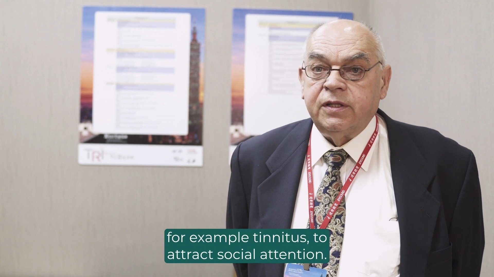
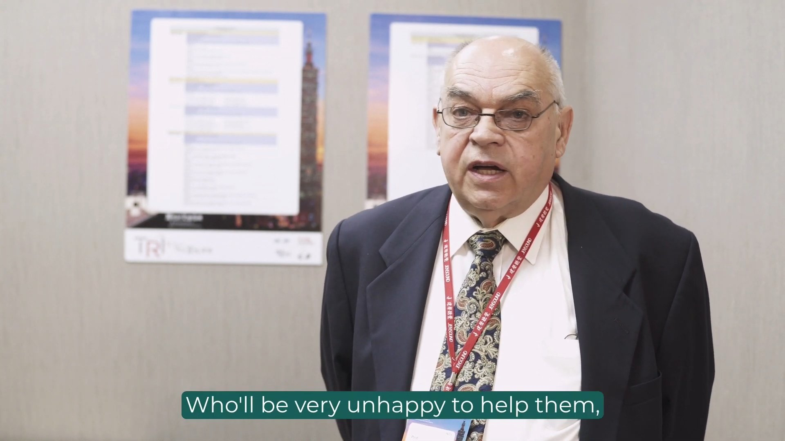
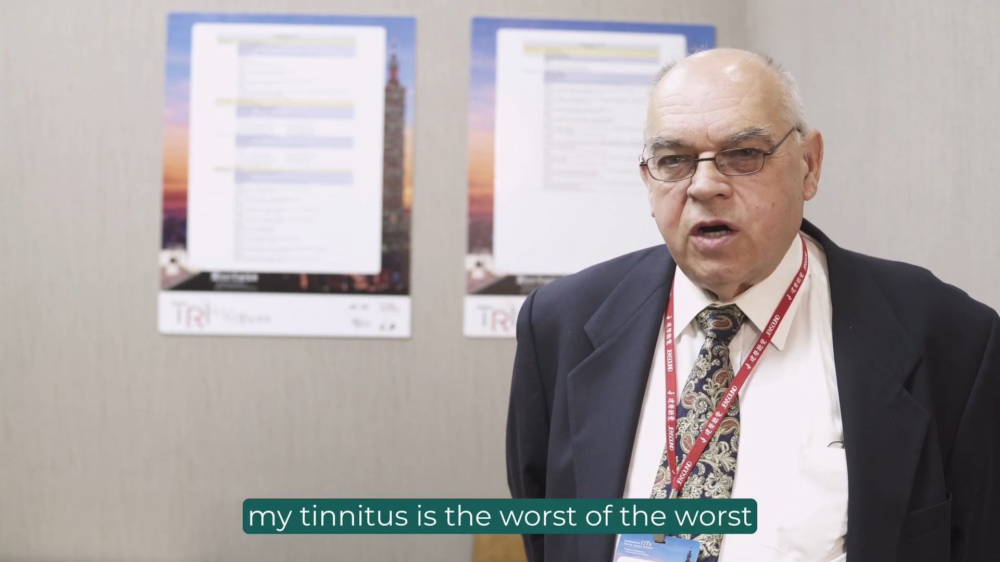
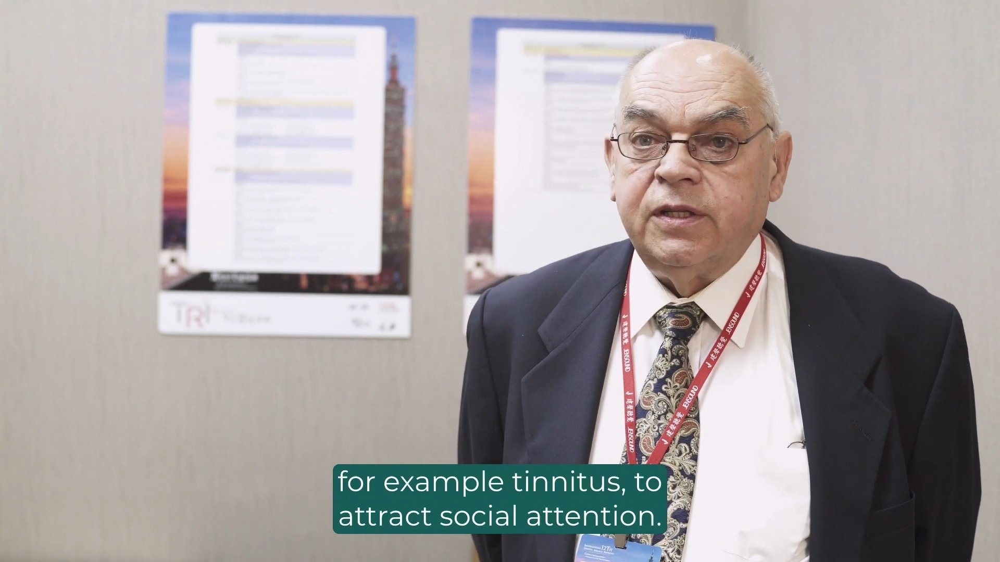
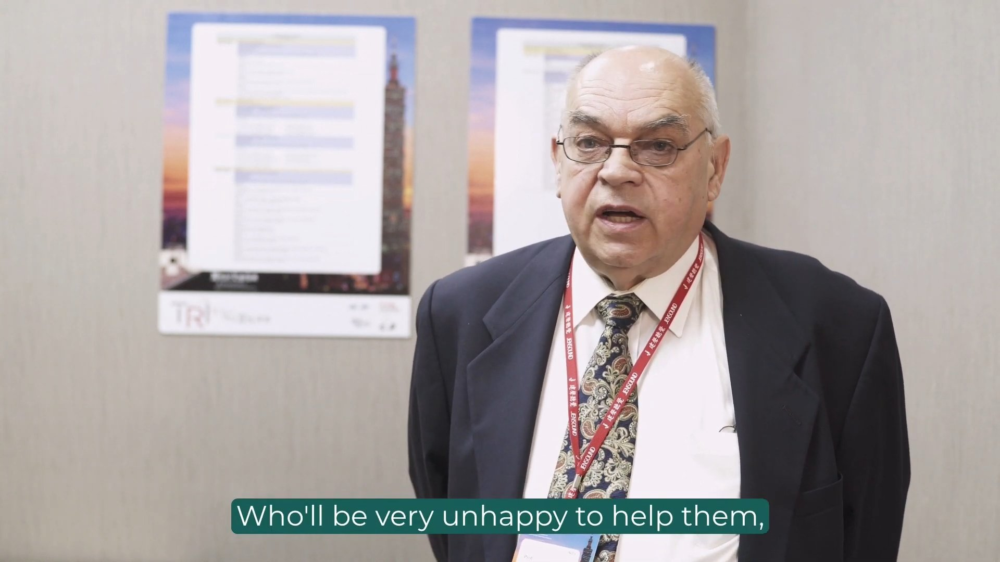
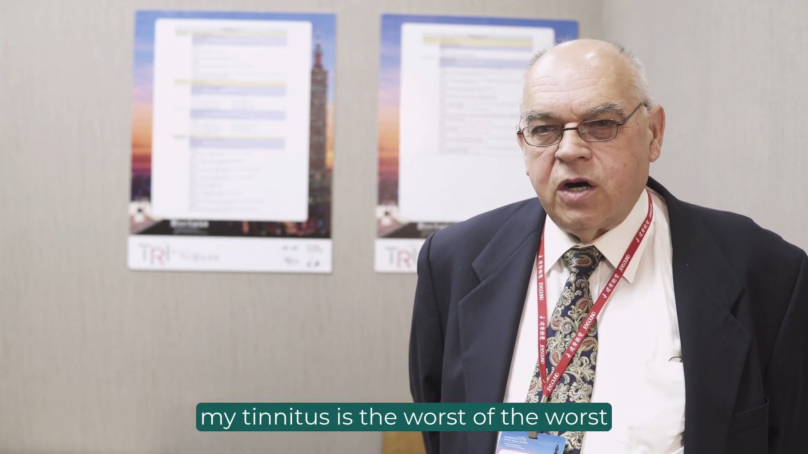
 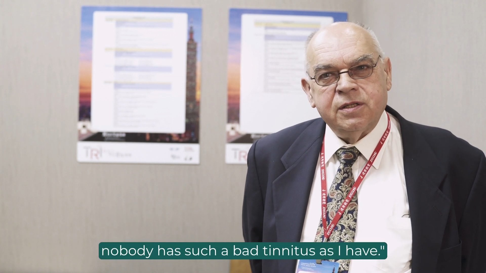
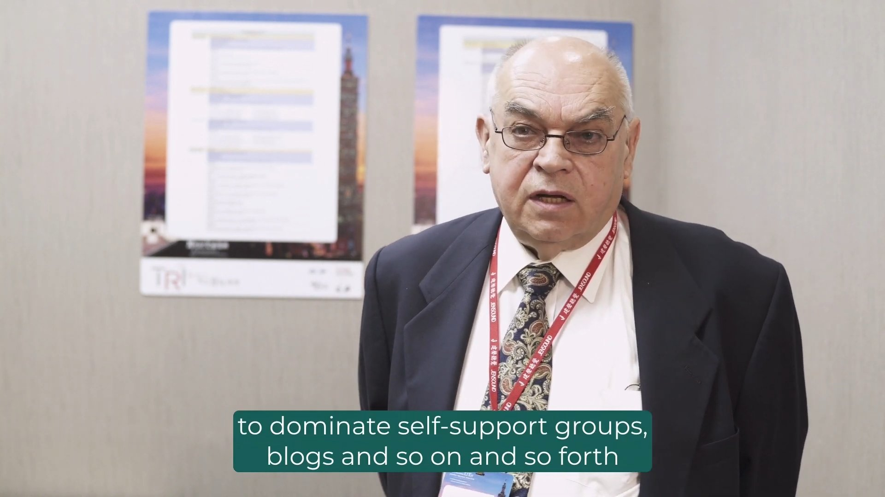
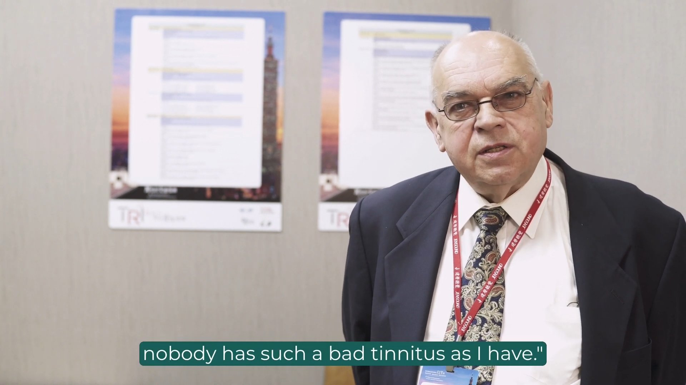
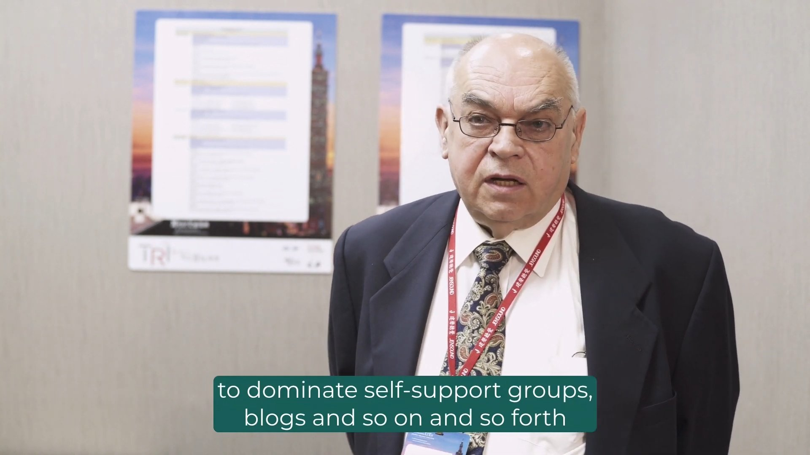
 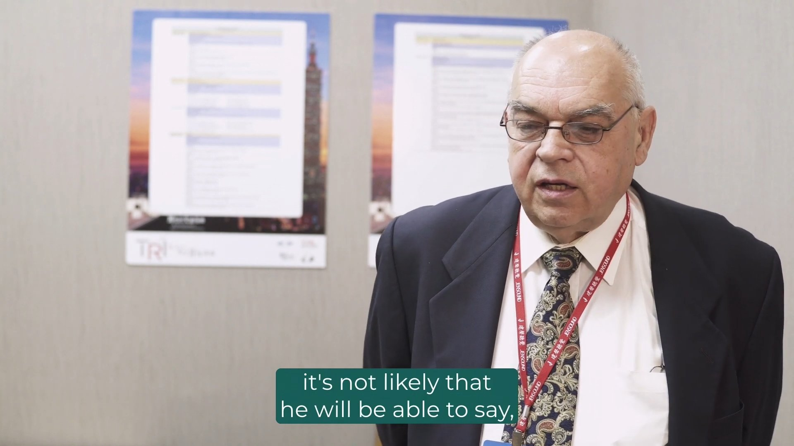
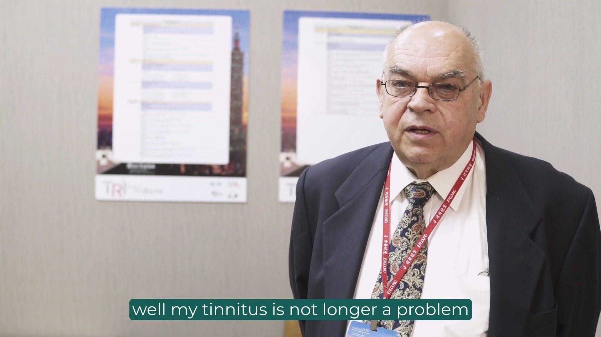
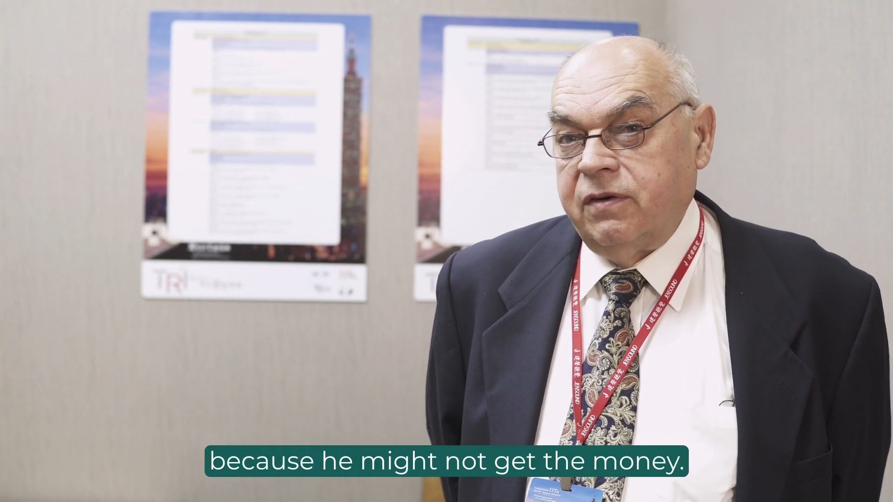
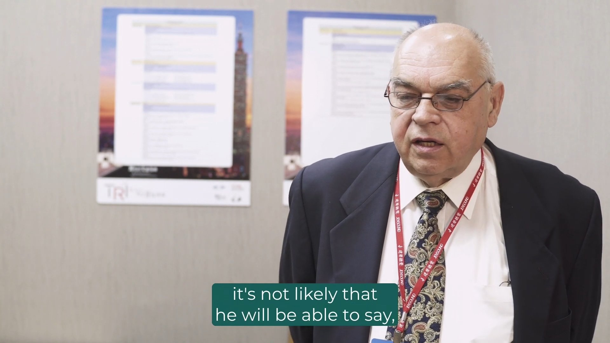
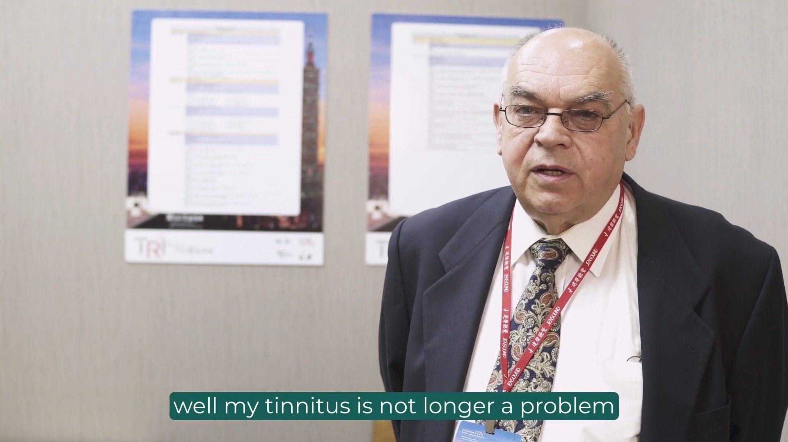
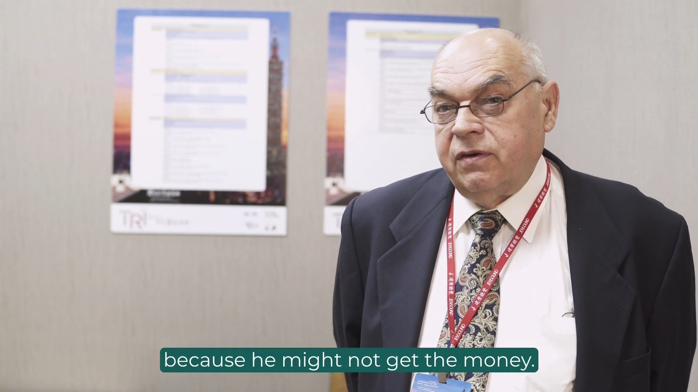
 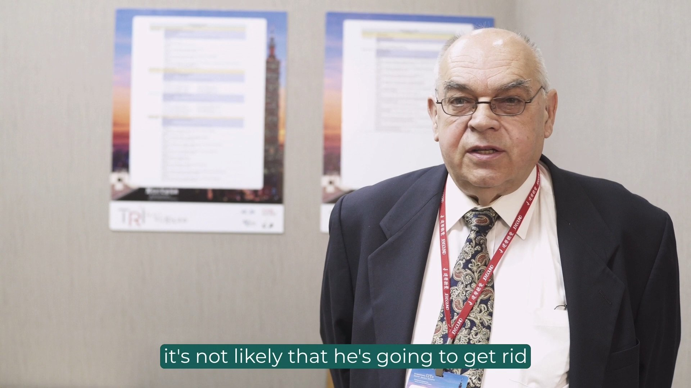
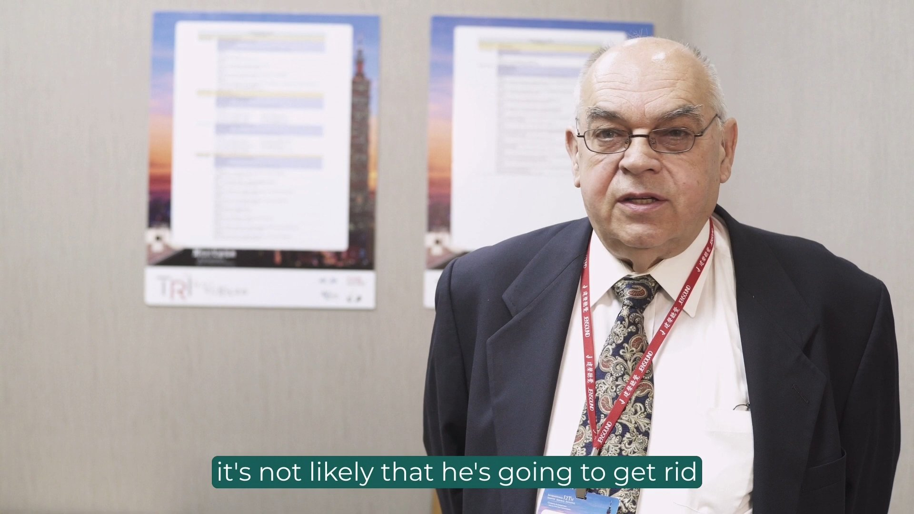